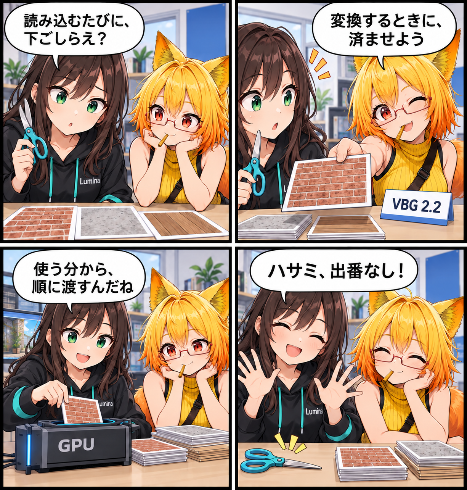

読み込む前に、下ごしらえ。VBG 2.2で背景ロードを見直した日
背景を開くたびに行っていた画像の準備を、保存・変換するときへ。VBG 2.2では、描画に渡しやすいテクスチャ形式と、必要なリソースを順に読む仕組みを組み合わせ、背景の読み込み処理を見直しました。

背景を開く前に、できる準備がある
背景データには、形だけでなく、表面の画像や焼き込まれた光なども含まれます。保存された画像を、そのまま描画へ渡せるとは限りません。今回の主題は、その準備を毎回のロードへ集中させず、変換時に済ませられる処理を前へ移すことです。
テクスチャを、描画に渡しやすい形で保存
VBG 2.2は、GPUへ転送するためのテクスチャ容器「VRTX」を使います。材質用画像では、色空間や法線マップとしての用途、縮小表示用画像の有無に合わせて変換します。これにより、生成したデータを読むときにPNGやJPEGを毎回復号して、縮小表示用画像を作り直す処理を避ける構成になりました。
焼き込まれた光の画像（ライトマップ）もVRTXへそろえます。Windows側の書き出しでは、条件が合えば光の色にBC6H、方向や影のマスクにBC7というGPU向け圧縮を使います。圧縮できない場合も、非圧縮のデータをVRTXへ収めます。すべての環境で同じ圧縮率になるという意味ではありません。
全部を抱えず、必要なリソースから読む
読み込み側には、VBG内の必要な項目を取り出す共通Readerを追加しました。ファイルを読む処理と、内容が想定どおりか調べるSHA-256の計算を同じ読み取りで進めます。大型リソースを一式まとめて保持する方式から、必要に応じて読み出す方式へ整理した点が重要です。
一方で、メモリ使用量がゼロになるわけではありません。読み出す項目ごとのバイト配列は確保し、小さな項目は再利用用キャッシュにも保持します。コード上のキャッシュ対象は1項目32 MiB以下、全体上限は128 MiBです。これは実行時の総メモリ上限や測定結果ではなく、このReaderのキャッシュ設定値です。
なぜ形式も一緒に変えるのか
保存側だけが新しい形式を出しても、読み込み側が理解できなければ使えません。今回の変更ではViewer側のReader、Writerと外部Unity Editor用Converterをrevision 2へそろえています。現行Readerは旧revision 0/1を入力対象にしないため、古いVBGは元のUnity SceneやPrefabからVBG 2.2へ再変換する必要があります。
技術的なポイント
- VBGの版数はvbgVersion=2、vbgRevision=2。拡張子は.vbgのままです。
- VRTXは寸法、形式、ミップ数などの情報と、GPUへ渡す画像データをまとめます。
- 共通Readerは必要なZIP項目を読み出し、その読み取りと同時にハッシュを検証します。
- 全リソースの一括保持を避ける設計と、上限付きキャッシュによる再利用を組み合わせています。
- 圧縮の可否や入力内容によって処理量は変わります。今回の記事では何秒・何倍といった高速化の実測値は示しません。
ほかにも進んだこと・補足
同じコミットでは、ライトマップを直接適用できない場合の間接光の色を変換時に事前計算する経路や、内部Cubemapの保存形式、関連する検証コードも更新されています。読み込み時の仕事を減らす方向で、背景に付随する処理も見直した変更です。
この記事は集計終了時点のコミット済みソースと仕様書に基づきます。この日記制作中にUnityの実行、性能計測、追加されたテストの実行は行っていません。未コミットのシーン、アセット、UIなどは今回の実績に含めていません。
4コマの裏話
ルミナが読み込みのたびに画像を切りそろえようとするところへ、ろひが準備済みのカードを差し出します。必要なカードから描画側へ渡し、最後はルミナのハサミが出番を失う寸劇です。カードやハサミは処理の役割を伝える比喩で、実際の操作画面や速度比較ではありません。今回は原因探しではなく、仕事を前の工程へ移したことで小道具が余る展開にしました。
まとめ
VBG 2.2では、変換時のテクスチャ準備と、必要に応じたリソース読み出しを組み合わせました。読み込みだけで頑張るのではなく、保存側から仕事の配分を変える高速化です。
本日のひとこと： 下ごしらえが済んでいたら、ハサミはお留守番。